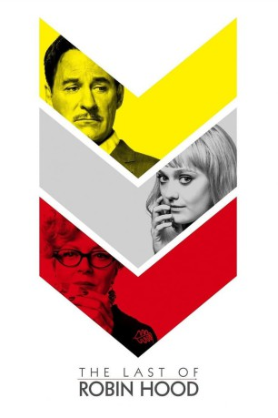
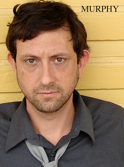

#8628 Mein Leben mit Robin Hood
Alternativ: The Last of Robin Hood
 
 IMDB-Wertung: 5.7 / 10
IMDB-Wertung: 5.7 / 10  Metascore: 0
Metascore: 0 
The Last of Robin Hood is the true story of Beverly Aadland, a teen starlet who became the last girlfriend of legendary swashbuckler Errol Flynn. In 1957, Beverly was working at Warner Brothers studios with a fake birth certificate saying she was 18 -- she was in fact, only 15 -- when she encountered the former matinée idol. After a bumpy start, the two undertook a relationship that was ultimately embraced by Beverly's Hollywood mother Florence, who became a willing third wheel. The affair took them from L.A. to New York to Africa, then to Cuba where Flynn pitched in with the rebels to make a pro-Castro propaganda movie starring Beverly. It all came crashing to an end in Vancouver, however, when Flynn died in Beverly's arms, causing an avalanche of publicity; Florence finally achieved the attention she sought in the form of tabloid notoriety but the chaos drove Beverly to the edge of sanity. The Last of Robin Hood is a poignant yet darkly comic coming-of-age tale about the desire for ...
Jahr: 2013
Dauer: 90 Minuten
FSK: 12
Land: USA Studio: Samuel Goldwyn FilmsTonspuren:
Untertitel:
Auflösung: SD (720x404) Größe: 998 MB
Genre: Drama, Liebe, Biographie
Regisseur: Richard Glatzer, Wash Westmoreland
Drehbuch: Richard Glatzer
Soundtrack: Nick Urata
Darsteller:
- Brian Bascle als Reporter #1
- Kelly O'Neal als Reporter #3
 Judd Lormand als Reporter #4
Judd Lormand als Reporter #4- David Kronawitter als Reporter #5
 Susan Sarandon als Florence Aadland
Susan Sarandon als Florence Aadland Ric Reitz als Melvin Belli
Ric Reitz als Melvin Belli- Matt Kane als Ronnie Shedlo
 Dakota Fanning als Beverly Aadland
Dakota Fanning als Beverly Aadland-  Kevin Patrick Murphy als Photographer
 Jason Davis als Tedd Thomey
Jason Davis als Tedd Thomey- Theresa O'Shea als Hancock Park Dowager
 Kevin Kline als Errol Flynn
Kevin Kline als Errol Flynn Bryan Batt als Orry Kelly
Bryan Batt als Orry Kelly Patrick St. Esprit als Herb Aadland
Patrick St. Esprit als Herb Aadland- Tim Peek als Autograph Hunter
 Joe Knezevich als John Ireland
Joe Knezevich als John Ireland Max Casella als Stanley Kubrick
Max Casella als Stanley Kubrick- Ava Knighten Santana als Cuban Girl
- Sean Flynn als Grip
- Geoff McKnight als Spotlight Bartender
 Justina Machado als Madge
Justina Machado als Madge- Kelley Hinman als Caldough
 Andrew Benator als Dr. Gould
Andrew Benator als Dr. Gould Jane McNeill als Cynthia Gould
Jane McNeill als Cynthia Gould- Christopher Nathan Miller als Dr. Gould's Son
- Jackie Prucha als Hedda Hopper
- Ben Winchell als Jack
 Kurt Krause als Frank
Kurt Krause als Frank- Amanda Dunn als Cuban Rebel Girl (uncredited)
 John Fleischmann als Reporter at Airport (uncredited)
John Fleischmann als Reporter at Airport (uncredited) Jeff Glover als Hotel Guest (uncredited)
Jeff Glover als Hotel Guest (uncredited)- John Jaret als Drummer (uncredited)
- Johnny Land als Errol's friend (uncredited)
- Josh Tippey als 1958 Birthday Dancer (The Stroll) (uncredited)
- Nick Urata als Guitar Player (uncredited)
- Alanna Wykoff als Beverly's Birthday Dancer (uncredited)
- John Hudson Messerall als TV News Reporter
- Daniel J. Clancy als Reporter #2
- Hannah Bryan als Jane Eyre
- Carlos E. Lopez als Enrique
- Frank Gallo als Ronnie's Friend
- Jade Healy als Warden
- Som Aidoo als African Drummer (uncredited)
- Peter Belsito als Barry Mahon - Director of Cuban Rebel Girls (uncredited)
- Starlin Britt als Gene Kelly (uncredited)
- Sofia Cano als Cuban Maid (uncredited)
- David Coffey als Photographer (uncredited)
- Greg Crews als Dolly Grip (uncredited)
- Dag Hammarskjöld als Himself (archive footage) (uncredited)
- Scott Ledbetter als Theater Goer (uncredited)
Datei: X:\2013(I-M)\Mein Leben mit Robin Hood (2013, FSK12, 720x404).mkv seit 25.03.2018
Festplatte: HD 2013(I-Z)-2014(A-Z)
 Es gibt insgesamt 89 Filme in der Gruppe '2013(I-M)'
Es gibt insgesamt 89 Filme in der Gruppe '2013(I-M)'